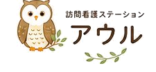
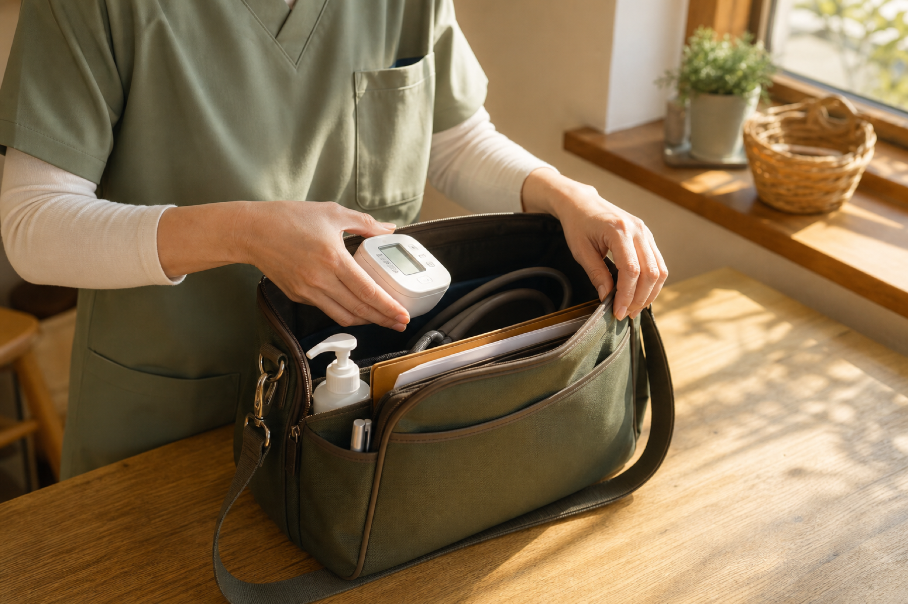

訪問看護師
健康観察・医療処置・服薬管理・ターミナルケア・ご家族支援などを担当。主治医やケアマネと連携し、その方に合った看護を組み立てます。専門領域を深めたい方も歓迎します。

お気軽にご相談ください0742-95-5001
訪問看護は生活の場に踏み込む看護です。教科書どおりにいかない分、ご本人・ご家族の「よかった」に直接触れられます。アウルは少数精鋭で専門性を大切にするステーション。ブランクのある方、在宅がはじめての方も、まずは一度お話しできれば嬉しいです。
株式会社ふくろう 代表 矢作 貴子
リハビリは訪問看護の一環として、看護と連携しながら提供します。
健康観察・医療処置・服薬管理・ターミナルケア・ご家族支援などを担当。主治医やケアマネと連携し、その方に合った看護を組み立てます。専門領域を深めたい方も歓迎します。
訪問看護の一環として、筋力・関節可動域の維持向上、歩行・日常動作の訓練、食事・入浴など生活動作の練習、福祉用具のご提案などを担当。看護師と情報を共有し、暮らしに沿ったリハビリを提供します。
顔と担当が見える距離感。相談しやすく、一件一件をていねいに看られます。
皮膚・排泄ケア、医療処置、心のケア。専門を持ち寄り、難しいケースにも根拠を持って向き合えます。
先輩と同行しながら在宅看護を身につけられます。得意分野を持つメンバーから学び合えます。
下記は現時点の想定です。確定内容は面談時にご案内します。
| 募集職種 | 看護師 ／ 理学療法士（PT） ／ 作業療法士（OT） |
|---|---|
| 雇用形態 | 正社員 ／ パート（応相談） |
| 勤務時間 | 訪問対応時間 9:00〜17:30 を基本。シフトは応相談。 |
| 休日・休暇 | 週休制、夏季休業（8/13〜8/15）、年末年始休業（12/30〜1/3）。有給等は別途ご説明します。 |
| 給与 | 経験・資格を考慮して決定。詳細は面談時にご提示します。 |
| 各種手当 | 通勤手当・オンコール手当 など。 |
| 福利厚生 | 各種社会保険、研修制度 など。 |
| 応募資格 | 看護師免許 ／ 理学療法士免許 ／ 作業療法士免許。在宅看護の経験は問いません。 |
上記の条件は現時点の想定です。確定内容は募集時期・面談時にご案内します。
「まず話を聞いてみたい」だけでも大丈夫です。いただいた内容をもとに担当よりご連絡します。
※こちらは採用専用のフォームです。訪問看護のご相談はお問い合わせからお願いします。